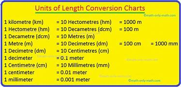

Length is a physical quantity that gives the measure of how long an object is. There are different aspects of measuring length such as distance covered, height, etc. Units of measurement for all the physical quantities belong to the same category. Each unit of measuring length can be expressed in terms of each other using the conversion method as these units have a standard value. Let us see the commonly used metric and imperial units of measurement of length below along with their relations with one another.
1 kilometer = 1000 meters
1 meter = 100 centimeters
1 foot = 12 inches
To know more about this,please click on below click
PDF downloadTo see more images
ImagesTo practice problems on this topic click on below click
Practice problems